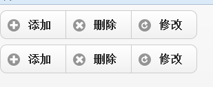

前言
到目前为止，我打了几天酱油了，这几天落实了工作，并且看了一部电视连续剧（陈道明-手机），我很少看连续剧了，但是手机质量很高啊，各位可以看看。
我们今天先学习一下jquery mobile的基础知识，然后逐步进入移动开发吧。
我们这里再来看看响应式布局，我们是一个页面可以在不同的设备上使用，其实这在某些方面上是不太合适的。
因为我们移动端的事件不太一致，可能鼠标操作很方便的，用手就不行了，所以为移动端出单独的网页还是很有必要的。
文中测试链接请使用手机打开。
什么是jQuery Mobile？
jquery mobile是jquery在移动设备上的版本，他是基于jquery、HTML5、CSS3构建的，他提供了一个丰富的交互性强的接口用以兼容不同移动平台。
于是我们去下载一番：
我这里就直接下载的这个压缩文件了，完了我们看看他有些什么东西，我们这个还是要依赖jquery的，所以还是准备一个吧。
这个东东是个好东西哦，他还有配套的样式呢，依赖他我们可以开发一套不错的手机应用呢。
自定义属性
在jquery mobile中，是使用自定义属性驱动页面的（data-....），比如：
data-role
定义元素在页面中的角色，该属性允许定义不同的组件元素及页面视图：data-role="page"
data-title
定义jquery mobile视图页面标题
data-transition
定义视图切换的动画效果
data-rel
定义具有浮动效果的视图
data-theme
指定元素或者组件内主题样式风格
data-icon
在元素内增加小图标
data-iconpos
定义小图标位置
data-inline
指定按钮根据内容自适应其长度
data-type
定义分组按钮水平或者垂直方向排布
data-rel
定义具有特定功能的元素，例如data-rel="back"返回按钮
data-add-back-btn
指定视图页面自动在页眉左侧添加返回按钮
data-back-btn-text
指定由石头页面自动创建的返回按钮的文本内容，该属性的使用通常都需要和data-add-back-btn配合
data-position
该属性是实现在滑动屏幕时工具栏的显示和隐藏状态
data-fullscreen
用于指定全屏视图页面
data-native-menu
指定下拉选择功能采用平台内置的选择器
data-placeholder
设置下拉选择功能的占位符
data-inset
实现内嵌列表功能
data-split-theme
设置列表右侧图标的主题样式风格
data-filter
开启列表过滤功能
搞了这么多自定义属性，我们也不知道什么是什么，所以不如来试一试吧。
页面与视图
页面与视图作为移动web应用程序最重要的用户界面之一，他主要承担整个web应用程序的界面呈现工作。
jquery mobile提供一套自定义元素属性用于搭建各种页面和视图。
1 <!DOCTYPE html> 2 <html xmlns="http://www.w3.org/1999/xhtml"> 3 <head> 4 <title></title> 5 <meta name="viewport" content="width=device-width, initial-scale=1"> 6 <link href="jquery.mobile-1.3.1.css" rel="stylesheet" type="text/css" /> 7 <script src="jquery-1.7.1.js" type="text/javascript"></script> 8 <script src="jquery.mobile-1.3.1.js" type="text/javascript"></script> 9 </head> 10 <body> 11 <div data-role="page"> 12 <div data-role="header">页头 13 </div> 14 <div data-role="content">内容 15 </div> 16 <div data-role="footer">页脚 17 </div> 18 </div> 19 </body> 20 </html>
http://sandbox.runjs.cn/show/itndsvbq

不要说还是有点感觉的。。。
我们在实例中使用div元素作为视图页面的布局元素但是我们这里改为html的元素更加好：
1 <!DOCTYPE html> 2 <html xmlns="http://www.w3.org/1999/xhtml"> 3 <head> 4 <title></title> 5 <meta name="viewport" content="width=device-width, initial-scale=1"> 6 <link id="jquerymobile_120" rel="stylesheet" type="text/css" class="library"
href="/js/sandbox/jquery-mobile/jquery.mobile-1.2.0/jquery.mobile-1.2.0.css"> 7 <script id="jquery_182" type="text/javascript" class="library"
src="/js/sandbox/jquery/jquery-1.8.2.min.js"></script> 8 <script id="jquerymobile_120" type="text/javascript" class="library"
src="/js/sandbox/jquery-mobile/jquery.mobile-1.2.0/jquery.mobile-1.2.0.min.js"></script> 9 </head> 10 <body> 11 <section data-role="page"> 12 <header data-role="header">页头 13 </header> 14 <article data-role="content">内容 15 </article> 16 <footer data-role="footer">页脚 17 </footer> 18 </section> 19 </body> 20 </html>
多视图web页面
前面只有一个视图，我们现在来看看多视图页面怎么处理：
1 <!DOCTYPE html> 2 <html xmlns="http://www.w3.org/1999/xhtml"> 3 <head> 4 <title></title> 5 <meta name="viewport" content="width=device-width, initial-scale=1"> 6 <link id="jquerymobile_120" rel="stylesheet" type="text/css" class="library" 7 href="/js/sandbox/jquery-mobile/jquery.mobile-1.2.0/jquery.mobile-1.2.0.css"> 8 <script id="jquery_182" type="text/javascript" class="library" 9 src="/js/sandbox/jquery/jquery-1.8.2.min.js"></script> 10 <script id="jquerymobile_120" type="text/javascript" class="library" 11 src="/js/sandbox/jquery-mobile/jquery.mobile-1.2.0/jquery.mobile-1.2.0.min.js"></script> 12 </head> 13 <body> 14 <section data-role="page" id="v1"> 15 <header data-role="header">视图一 16 </header> 17 <article data-role="content"> 18 <a href="#v2">去视图二</a> 19 </article> 20 <footer data-role="footer">页脚 21 </footer> 22 </section> 23 <section data-role="page" id="v2"> 24 <header data-role="header">视图二 25 </header> 26 <article data-role="content"> 27 <a href="#v1">去视图1</a> 28 </article> 29 <footer data-role="footer">页脚 30 </footer> 31 </section> 32 </body> 33 </html>
http://sandbox.runjs.cn/show/l4vejd6v
我们点击超链接可以在视图一与视图二切换，你会发现还有一点点动画效果呢！！！
PS：在此若是设置了data-title将改变手机上title的标题
动画
我们可以设置6钟动画效果：
① Slide 从右到左切换
② Slideup 从下到上切换
③ Slidedown 从上到下切换
④ Pop弹出框方式打开
⑤ Fade 渐变褪色方式
⑥ Flip飞入飞出方式
这里我就不截图了，我私下试试去。
<a href="#v1" data-transition="pop">去视图1</a>
效果感觉不错哦！！！
dialog对话框
只要在标签的data-rel设置了dialog属性，视图就具有dialog浮动层效果。
<a href="#v2" data-rel="dialog">去视图二</a>

这里有点表现不佳，我们暂时不管他。
页面主题
<section data-role="page" id="v1" data-theme="a">
关于自定义属性的东西暂时写到这里，我们来看看我们比较重要的按钮。
按钮
按钮在移动web应用程序中式非常重要的用户界面组件，主要用作为用户提供各种操作入口和视图交互功能，我们的jquery mobile提供了很多不错的按钮。
1 <!DOCTYPE html> 2 <html xmlns="http://www.w3.org/1999/xhtml"> 3 <head> 4 <title></title> 5 <meta name="viewport" content="width=device-width, initial-scale=1"> 6 <link id="jquerymobile_120" rel="stylesheet" type="text/css" class="library" 7 href="/js/sandbox/jquery-mobile/jquery.mobile-1.2.0/jquery.mobile-1.2.0.css"> 8 <script id="jquery_182" type="text/javascript" class="library" 9 src="/js/sandbox/jquery/jquery-1.8.2.min.js"></script> 10 <script id="jquerymobile_120" type="text/javascript" class="library" 11 src="/js/sandbox/jquery-mobile/jquery.mobile-1.2.0/jquery.mobile-1.2.0.min.js"></script> 12 </head> 13 <body> 14 <div data-role="button">我是按钮</div> 15 </body> 16 </html>
于是我们的按钮就出现啦，在页面上独占一行。
input 中button、submit等也都变成了这个样式了
小图标
jquery mobile提供了一套小图标：

图标太多，我这里简单列两个：
delete：删除，data-icon="delete"
plus：加号，data-icon="plus"
PS:设置data-iconpos="notext"便可以只要图标不要文字
1 <div data-role="button" data-icon="delete">删除</div> 2 <div data-role="button" data-icon="delete" data-iconpos="notext">删除</div> 3 <div data-role="button" data-icon="delete" data-iconpos="right">删除</div>
http://sandbox.runjs.cn/show/xd9axexu

若是系统提供的图标不能满足条件的话，便可以自定义图标
data-icon="myapp-email"
myapp-email就是自定义图标的名称（需要上传）
css中对应的样式是.ui-icon-myapp-email
自定义图标大小是18*18，建议png-8
按钮分组
1 <!DOCTYPE html> 2 <html xmlns="http://www.w3.org/1999/xhtml"> 3 <head> 4 <title></title> 5 <meta name="viewport" content="width=device-width, initial-scale=1"> 6 <link id="jquerymobile_120" rel="stylesheet" type="text/css" class="library" 7 href="/js/sandbox/jquery-mobile/jquery.mobile-1.2.0/jquery.mobile-1.2.0.css"> 8 <script id="jquery_182" type="text/javascript" class="library" 9 src="/js/sandbox/jquery/jquery-1.8.2.min.js"></script> 10 <script id="jquerymobile_120" type="text/javascript" class="library" 11 src="/js/sandbox/jquery-mobile/jquery.mobile-1.2.0/jquery.mobile-1.2.0.min.js"></script> 12 </head> 13 <body> 14 <div data-role="controlgroup" data-type="horizontal"> 15 <div data-role="button" data-icon="plus"> 16 添加</div> 17 <div data-role="button" data-icon="delete"> 18 删除</div> 19 <div data-role="button" data-icon="refresh"> 20 修改</div> 21 </div> 22 <div data-role="controlgroup" data-type="horizontal"> 23 <div data-role="button" data-icon="plus"> 24 添加</div> 25 <div data-role="button" data-icon="delete"> 26 删除</div> 27 <div data-role="button" data-icon="refresh"> 28 修改</div> 29 </div> 30 </body> 31 </html>
http://sandbox.runjs.cn/show/u7cydmrv

感觉还不错的说，这里还可以为各个按钮设置主题，看起来就更加有分别了。
Bar 工具栏
工具栏也是一重要组件，我们这里结合前面的按钮来完成一完整的工具栏。
jquery mobile提供两组工具栏：
Headers bar
充当视图页面的标题作用，在一般情况下header bar位于页面的顶部，一般包含2按钮
Footer bar
这个工具栏一般位于尾部，就是与header bar对应的东东
初体验：
1 <!DOCTYPE html> 2 <html xmlns="http://www.w3.org/1999/xhtml"> 3 <head> 4 <title></title> 5 <meta name="viewport" content="width=device-width, initial-scale=1"> 6 <link id="jquerymobile_120" rel="stylesheet" type="text/css" class="library" 7 href="/js/sandbox/jquery-mobile/jquery.mobile-1.2.0/jquery.mobile-1.2.0.css"> 8 <script id="jquery_182" type="text/javascript" class="library" 9 src="/js/sandbox/jquery/jquery-1.8.2.min.js"></script> 10 <script id="jquerymobile_120" type="text/javascript" class="library" 11 src="/js/sandbox/jquery-mobile/jquery.mobile-1.2.0/jquery.mobile-1.2.0.min.js"></script> 12 </head> 13 <body> 14 <div data-role="page"> 15 <header data-role="header"> 16 <h1>header bar</h1> 17 </header> 18 <div>内容区域</div> 19 <footer data-role="footer"> 20 <h2>footer bar</h2> 21 </footer> 22 </div> 23 </body> 24 </html>

我们在此基础上改下：
1 <!DOCTYPE html> 2 <html xmlns="http://www.w3.org/1999/xhtml"> 3 <head> 4 <title></title> 5 <meta name="viewport" content="width=device-width, initial-scale=1"> 6 <link id="jquerymobile_120" rel="stylesheet" type="text/css" class="library" 7 href="/js/sandbox/jquery-mobile/jquery.mobile-1.2.0/jquery.mobile-1.2.0.css"> 8 <script id="jquery_182" type="text/javascript" class="library" 9 src="/js/sandbox/jquery/jquery-1.8.2.min.js"></script> 10 <script id="jquerymobile_120" type="text/javascript" class="library" 11 src="/js/sandbox/jquery-mobile/jquery.mobile-1.2.0/jquery.mobile-1.2.0.min.js"></script> 12 </head> 13 <body> 14 <div data-role="page"> 15 <header data-role="header"> 16 <h1>header bar</h1> 17 </header> 18 <div>内容区域</div> 19 <footer data-role="footer"> 20 <div data-role="controlgroup" data-type="horizontal" > 21 <div data-role="button" data-icon="plus" data-theme="a"> 22 添加</div> 23 <div data-role="button" data-icon="delete" data-theme="b"> 24 删除</div> 25 <div data-role="button" data-icon="refresh" data-theme="c"> 26 修改</div> 27 </div> 28 </footer> 29 </div> 30 </body> 31 </html>
http://sandbox.runjs.cn/show/icqp5f8v
导航工具条
navbar是非常有用的，他提供不同数量的按钮组合，一般位于header或者footer中
1 <!DOCTYPE html> 2 <html xmlns="http://www.w3.org/1999/xhtml"> 3 <head> 4 <title></title> 5 <meta name="viewport" content="width=device-width, initial-scale=1"> 6 <link id="jquerymobile_120" rel="stylesheet" type="text/css" class="library" 7 href="/js/sandbox/jquery-mobile/jquery.mobile-1.2.0/jquery.mobile-1.2.0.css"> 8 <script id="jquery_182" type="text/javascript" class="library" 9 src="/js/sandbox/jquery/jquery-1.8.2.min.js"></script> 10 <script id="jquerymobile_120" type="text/javascript" class="library" 11 src="/js/sandbox/jquery-mobile/jquery.mobile-1.2.0/jquery.mobile-1.2.0.min.js"></script> 12 </head> 13 <body> 14 <div data-role="page"> 15 <header data-role="header"> 16 <h1>header bar</h1> 17 </header> 18 <div>内容区域</div> 19 <footer data-role="footer"> 20 <nav data-role="navbar"> 21 <ul> 22 <li> 23 <a href="#" class="ul-btn-active" data-icon="home">主页</a> 24 </li> 25 <li> 26 <a href="#" data-icon="search">查找</a> 27 </li> 28 <li> 29 <a href="#" data-icon="info">信息</a> 30 </li> 31 </ul> 32 </nav> 33 </footer> 34 </div> 35 36 </body> 37 </html>
http://sandbox.runjs.cn/show/pwbcm0mo

各位感觉还行吧。。。
fixed工具栏
这个家伙提供后，我们在轻触屏幕或者滑动屏幕时，header和footer都会出现或者消失
<header data-role="header" data-position="fixed">
结语
我们今天暂时学到这里，明天再继续吧。